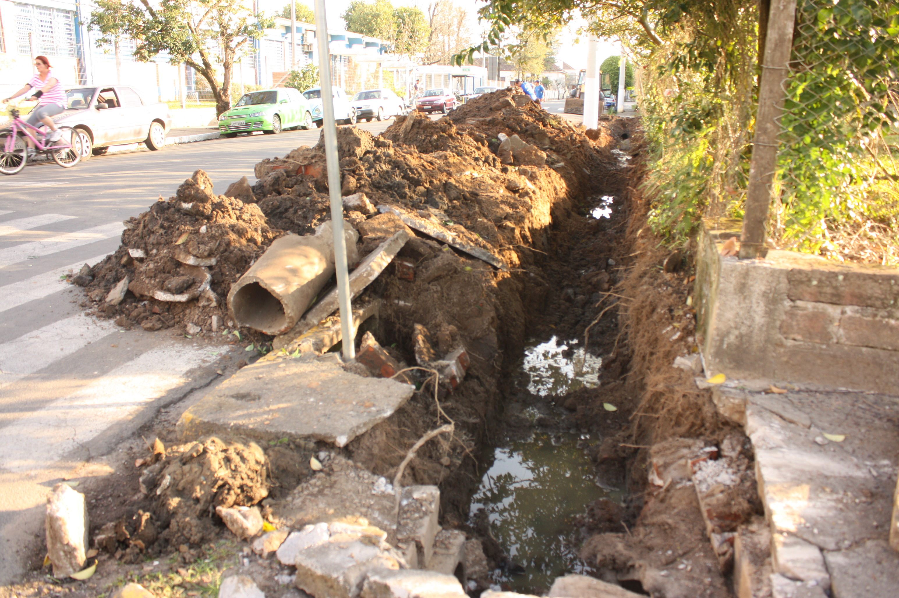

Encanamento Centenário

Crise da Água no Sudeste Brasileiro

Curiosidades Sobre a Água
Osmose Reversa

OmniProcessor

Encanamento Centenário
Além da falta d'água, tem o desperdício. Um estudo mostra que quase 40% da água tratada no Brasil é desperdiçada. Só em São Paulo, R$ 250 milhões são investidos todos os anos para diminuir as perdas, mas o problema continua.
A rede que distribui a água na cidade é considerada velha e muitos trechos precisam passar por manutenção. Os vazamentos são o maior problema, e podem causar um estrago bilionário. Água que corre solta nos canos sem manutenção, nas ligações clandestinas. No Brasil, desce pelo ralo quase 40% do faturamento das empresas operadoras por causa das perdas de água. A situação é mais crítica na Região Norte, onde mais da metade do faturamento é perdido. A média de perda da Europa é 15%, do Japão, 3%.
É uma perda enorme de recursos financeiros que poderia estar voltando para o sistema de saneamento para que mais pessoas tivessem água ou coleta e tratamento de esgoto
, afirma Edson Carlos, presidente do Instituto Trata Brasil.
O estudo do Instituto Trata Brasil mostra que uma redução de apenas 10% das perdas do país representaria uma receita de R$ 1,3 bilhão, quase a metade do investimento feito em abastecimento de água no ano de 2010.
Reduzir perdas é importante também para não faltar água. O estudo mostra que um terço das cem maiores cidades do país precisa de um novo manancial para atender a população.
A capital paulista é um exemplo. A Região Metropolitana de São Paulo tem 50 mil quilômetros de tubulações enterradas, daria para dar uma volta e meia no planeta. A extensão e a idade da rede são os maiores desafios.
Todos os anos a empresa que abastece a região investe R$ 250 milhões para diminuir as perdas, com reforma nas instalações hídricas e busca minuciosa por vazamentos. O investimento já rendeu um índice de perda abaixo da média do estado: 26%. A meta é chegar a 15% até 2020.
Neste ano, o investimento na rede de água de São Paulo deve subir para R$ 370 milhões, uma alta de quase 50% em relação a 2012. O aumento dos recursos é resultado de uma parceria com o Japão.